.png)
[7552] 장내채권주문종합
채권 투자, 한눈에 확인하고
스마트하게 운용하다
[7552] 장내채권주문종합 화면은 장내에서 거래되는 국채·지방채·특수채 등 다양한 채권 상품을 매매하고, 발행정보와 계좌 내역까지 종합적으로 확인할 수 있는 기능을 제공합니다.
채권은 주식과 달리 만기까지 보유하거나 일정 기간마다 이자를 지급받을 수 있습니다.
가격 변동성도 주식에 비해 상대적으로 낮고, 중도 매매가 가능하기 때문에 투자자는 안정적인 수익을 확보하는 동시에 자금을 유연하게 운용할 수 있는 이점도 누릴 수 있습니다.
또, 채권을 개인이 직접 투자할 경우 매매차익에 대해 과세되지 않아 절세 효과도 기대할 수 있습니다.
채권 정보와 주문 내역을 한눈에
이 화면이 채권 거래에 딱 맞는 이유!
| 특징 | 이런 점이 좋아요 |
|---|---|
| 간편한 통합 주문 기능 | 매수, 매도, 정정, 취소 주문을 한 화면에서 처리 |
| 발행 조건 조회 | 발행일, 만기일, 표면이율, 상환방법 등 세부 정보 제공 |
| 잔고 · 결제 관리 | 계좌별 잔고, 결제예정 내역, 예수금 상태까지 즉시 확인 |
채권과 관련된 정보와 기능을 알차게 모았습니다
01기본 화면 구성
LS증권의 [7552] 장내채권주문통합 화면은 채권 시세 · 정보 조회부터 주문, 체결 내역과 계좌 확인까지 한곳에서 처리할 수 있는 종합 기능을 제공합니다.
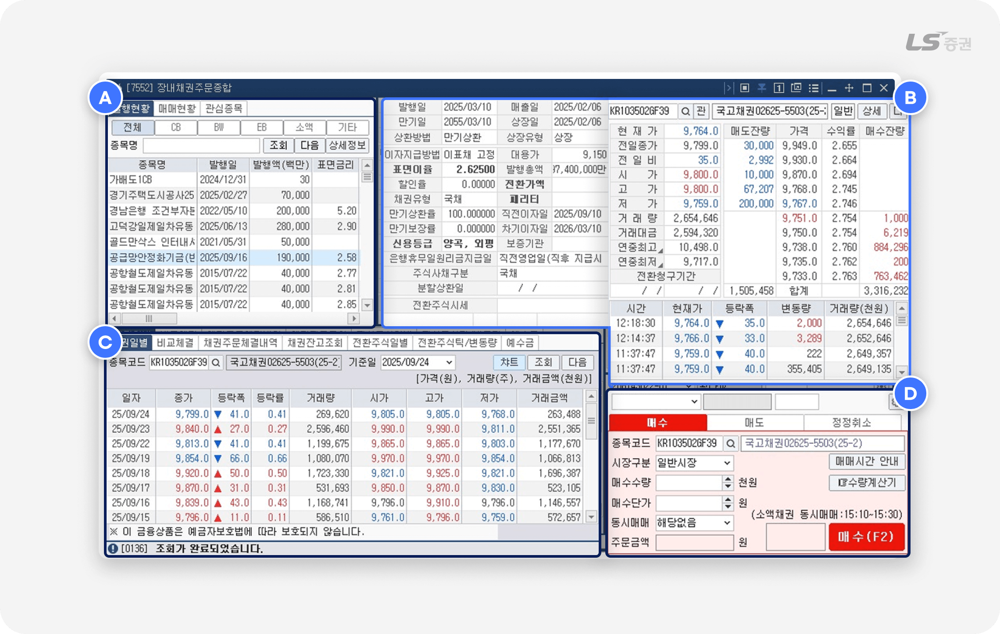
화면은 다음과 같이 4개의 영역으로 나누어집니다.
| 번호 | 영역 | 주요기능 |
|---|---|---|
| A | 종목 / 관심 정보 | 현재 발행 및 매매중인 채권과 관심종목을 조회할 수 있습니다. |
| B | 시세 / 호가 정보 | 선택 종목의 기본 정보, 시세, 매수/매도 호가 정보 등을 확인할 수 있습니다. |
| C | 계좌 / 주문 관리 | 거래량 정보, 계좌 상태와 주문 현황을 조회하고 주문을 정정/취소할 수 있습니다. |
| D | 주문 실행 | 매수/매도/정정/취소 주문을 접수할 수 있습니다. |
일목요연하게 살펴보는,
02종목 / 관심 정보 (A영역)
발행현황
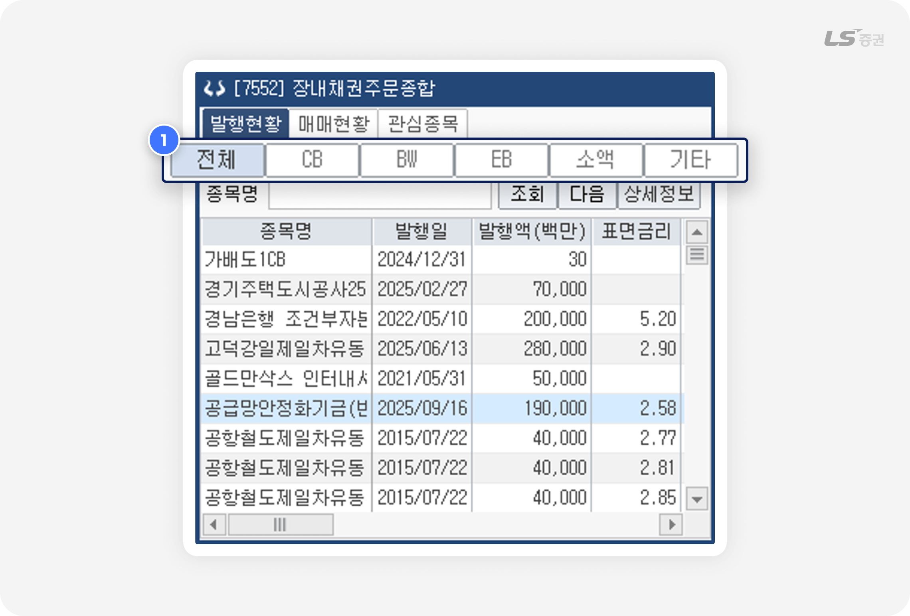
-
1
채권 종류 선택
- 조회하려는 채권 종류를 선택할 수 있습니다.
| 분류 | 주요 기능 |
|---|---|
| CB (전환사채) | 일정 기간 후 발행 기업의 주식으로 전환할 수 있는 권리가 부여된 채권입니다. |
| BW (신주인수권부사채) | 신주를 일정한 가격에 인수할 수 있는 권리가 부여된 채권입니다. |
| EB (교환사채) | 사채를 발행한 기업이 보유하고 있는 다른 회사의 주식 또는 증권과 교환할 수 있는 권리가 부여된 채권입니다. |
| 소액 (소액채권) | 1인당 호가수량이 액면 5천만원 이하인 당월 또는 전월에 발행된 제1종 국민주택채권, 도시철도채권, 지역개발채권입니다. |
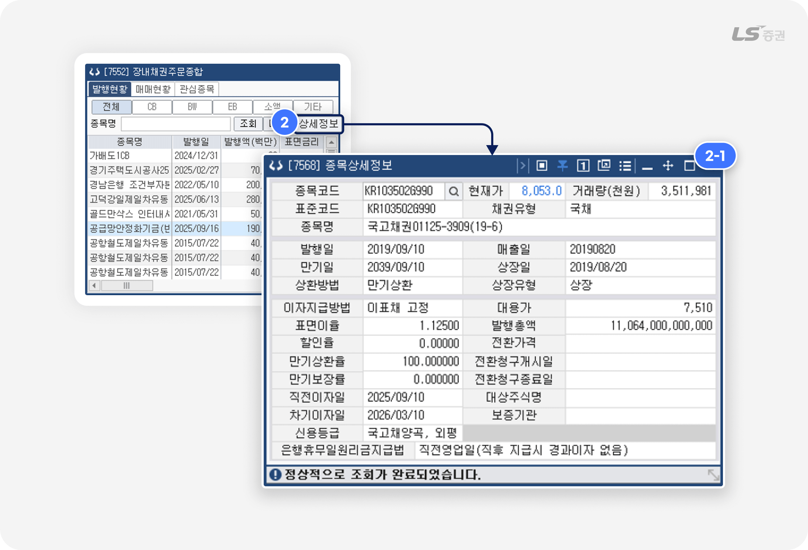
-
2
채권 상세정보 조회
- 종목 선택 후 ‘상세정보’ 버튼 클릭 시 [7568] 종목상세정보 화면에서 채권 관련 상세 정보를 확인할 수 있습니다.
| 주요 항목 | 설명 |
|---|---|
| 표면이율 | 채권 발행 시 정해진 연간 이자율로, 보유 기간 동안 정기적으로 지급되는 이자 계산의 기준이 됩니다. |
| 할인율 | 채권을 액면가보다 낮은 가격으로 발행하거나 거래할 때 적용되는 비율입니다. 이 할인분만큼 투자자는 만기 시 이익을 얻을 수 있습니다. |
| 만기상환율 |
채권 만기 시 원금 상환에 적용되는 비율입니다. 예를 들어 100% 이면 액면가 그대로 상환되며, 전환사채나 특수 조건부 채권은 다르게 설정될 수 있습니다. |
| 만기보장률 |
채권 만기까지 보유할 경우 투자자에게 보장되는 원금 및 이자 지급 비율입니다. 원금 보전 여부를 확인할 수 있는 지표로 활용됩니다. |
| 전환가격 | 전환사채처럼 주식으로 바꿀 수 있는 권리가 있는 경우, 채권을 주식으로 전환할 때 적용되는 1주당 가격입니다. |
신용등급으로 원금을 돌려받을 수 있을지 상환 리스크 파악하기
- 국가가 발행하는 국채나 공공기관이 발행하는 공사채는 회수 가능성이 높기 때문에 투자 기간 위주로 고려하면 되지만, 회사가 발행하는 회사채는 상환능력에 따라 원금을 회수하지 못할 수도 있어 신용평가기관이 발표하는 신뢰도 지표인 신용등급으로 회수 가능성을 확인해볼 수 있습니다.
-
AAA > AA+ > AA0 > AA- > A+ > A0 > A- > BBB+ ... 예와 같은 순서로 신용등급은 알파벳이 앞선 A등급 순으로 우수하며, 등급 표시가 많을수록, + > 0 > - 순으로 우수합니다.
신용등급은 높을수록 이율이 낮지만 회수 가능성이 높고, 낮을수록 이율이 높지만 회수 가능성이 낮기 때문에 상환 리스크를 잘 따져보아야 합니다. - 신용등급은 회사의 안정성과 회수 가능성을 절대적으로 담보하지 않으므로 투자판단에 대한 참고자료로만 활용하시기 바랍니다.
매매현황
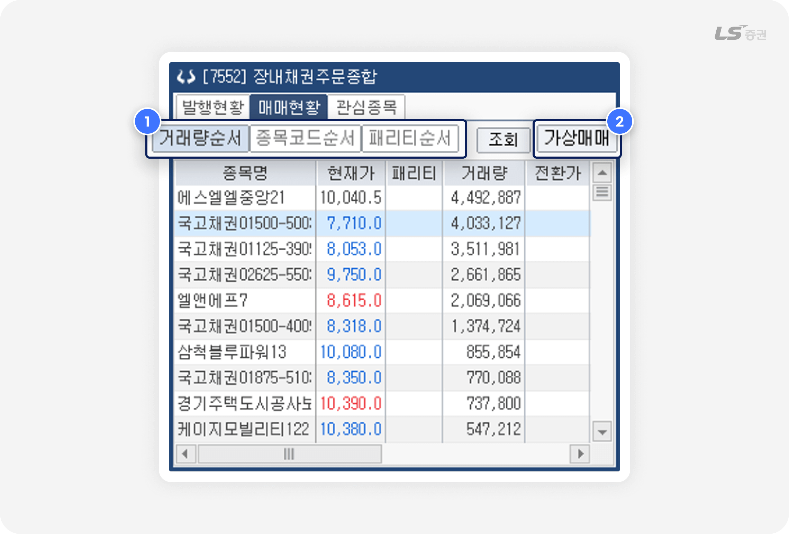
-
1
정렬 선택
- 당일 매매 종목의 순위 조회 기준을 거래량순서, 종목코드순서, 패리티순서 중 선택할 수 있습니다.
-
2
가상매매
- 클릭 시 [7556] 채권가상매매 화면에서 종목을 선택하고 매매수량, 수익률 등을 입력해 예상 수익과 정산금액을 계산할 수 있습니다.
채권을 보유할까, 주식으로 바꿀까, 패리티란?
패리티(Parity)는 전환사채(CB)나 신주인수권부사채(BW)처럼 주식으로 전환할 수 있는 권리가 붙은 채권의 이론적 가치로, 채권을 주식으로 전환하면 매도 등으로 얻을 수 있는 기회비용을 계산할 때 중요한 지표로 활용합니다.
- 패리티가 100% 이상이면, 주가가 전환가보다 높으므로 채권을 주식으로 전환하는 것이 유리합니다.
- 패리티가 100% 미만이면, 주가가 전환가보다 낮으므로 채권을 보유하는 것이 유리합니다.
관심종목
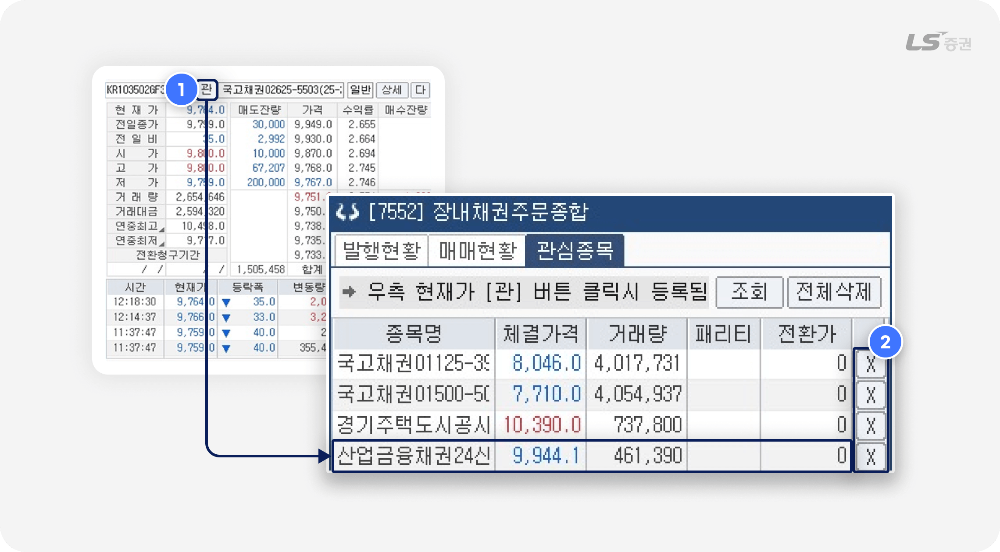
-
1
관심종목 등록
- 우측 시세 / 호가 정보 영역(B)에서 ‘관’ 버튼 클릭 시 조회중인 종목이 관심종목에 추가됩니다.
-
2
관심종목 삭제
- 종목 우측의 ‘X’ 버튼 클릭 시 해당 종목이 관심종목에서 삭제됩니다.
종목의 현황과 전망을 가늠하는,
03시세 / 호가 정보 (B영역)
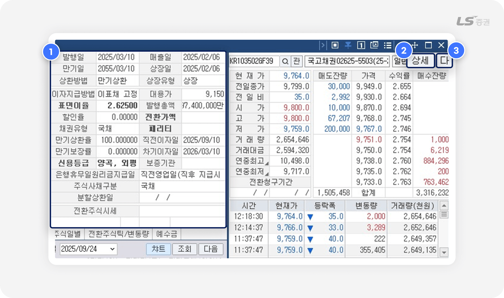
-
1
채권 시세 및 거래정보 조회
- 선택한 채권에 대한 주요 정보를 조회할 수 있습니다.
| 주요 항목 | 설명 |
|---|---|
| 표면이율 | 채권 발행 시 정해진 연간 이자율로, 보유 기간 동안 정기적으로 지급되는 이자 계산의 기준이 됩니다. |
| 할인율 |
채권을 액면가보다 낮은 가격으로 발행하거나 거래할 때 적용되는 비율입니다. 이 할인분만큼 투자자는 만기 시 이익을 얻을 수 있습니다. |
| 만기상환율 |
채권 만기 시 원금 상환에 적용되는 비율입니다. 예를 들어 100% 이면 액면가 그대로 상환되며, 전환사채나 특수 조건부 채권은 다르게 설정될 수 있습니다. |
| 만기보장률 |
채권 만기까지 보유할 경우 투자자에게 보장되는 원금 및 이자 지급 비율입니다. 원금 보전 여부를 확인할 수 있는 지표로 활용됩니다. |
| 전환가액 | 전환사채처럼 주식으로 바꿀 수 있는 권리가 있는 경우, 채권을 주식으로 전환할 때 적용되는 1주당 가격입니다. |
-
2
채권 상세정보 조회
- 종목 선택 후 ‘상세정보’ 버튼 클릭 시 [7568] 종목상세정보 화면에서 채권 관련 상세 정보를 확인할 수 있습니다.
-
3
공시자료 조회
- 종목 선택 후 ‘다’ 버튼 클릭 시 금융감독원 전자공시시스템(DART) 에서 해당 종목의 공시를 조회할 수 있습니다.
거래의 전 과정을 빈틈없이 체계적으로,
04계좌 / 주문 관리 (C영역)
채권 일별 추이
기준일을 설정하여 선택한 채권에 대한 시세 추이를 수치 또는 차트로 조회할 수 있습니다.
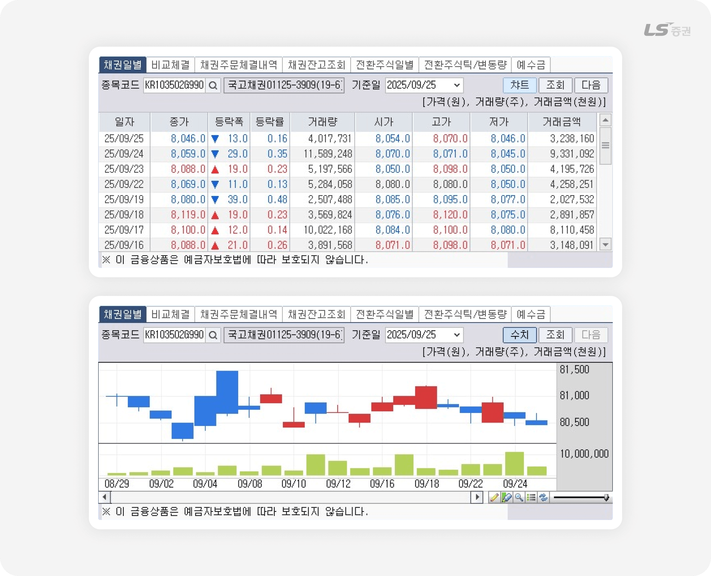
체결 추이 비교
주식 종목과 채권의 시간별 현재가 및 거래량 추이를 수치 또는 차트로 비교할 수 있습니다.
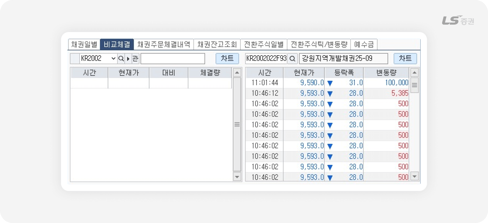
채권 주문체결내역
채권 주문이력을 조회하고, 당일 미체결 주문의 경우 선택하여 정정 및 취소할 수 있습니다.
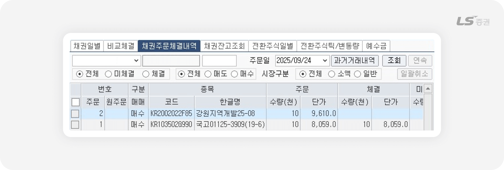
채권 잔고조회
기준일별 보유 잔고 이력을 조회할 수 있습니다.
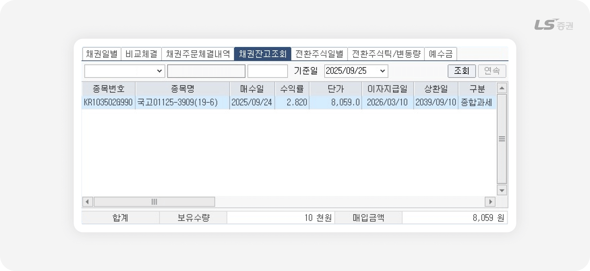
전환주식 일별 추이
전환 행사할 수 있는 주식의 일별 시세 및 거래량 정보를 수치 또는 차트로 조회할 수 있습니다.
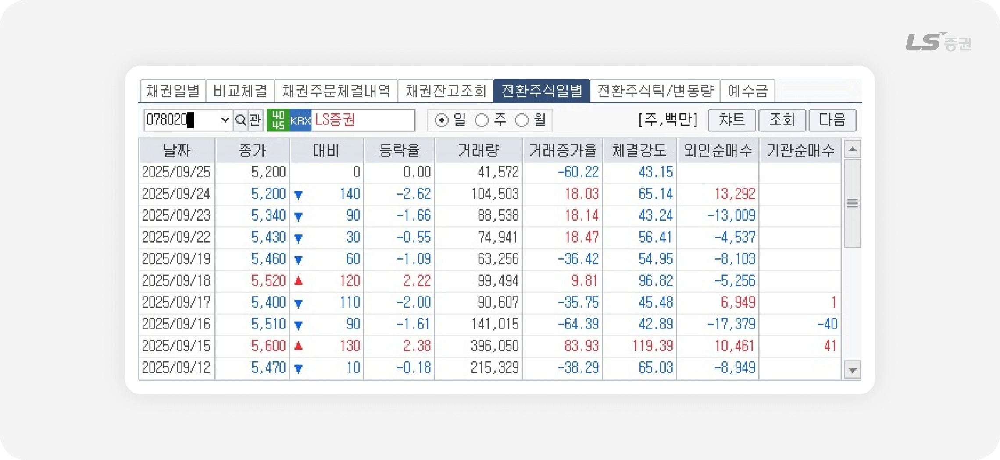
전환주식 틱/변동량 추이
전환 행사할 수 있는 주식의 당일 시간대별 추이를 수치 또는 차트로 조회할 수 있습니다.
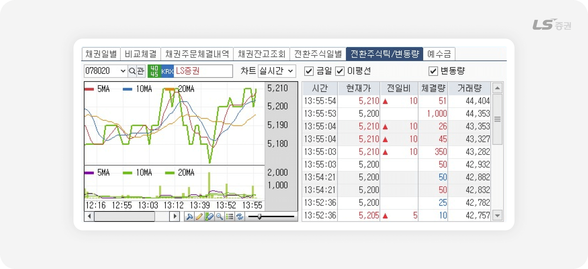
예수금
보유 현금, 미수금, 증거금, 추정 인출 가능 금액을 확인할 수 있습니다.
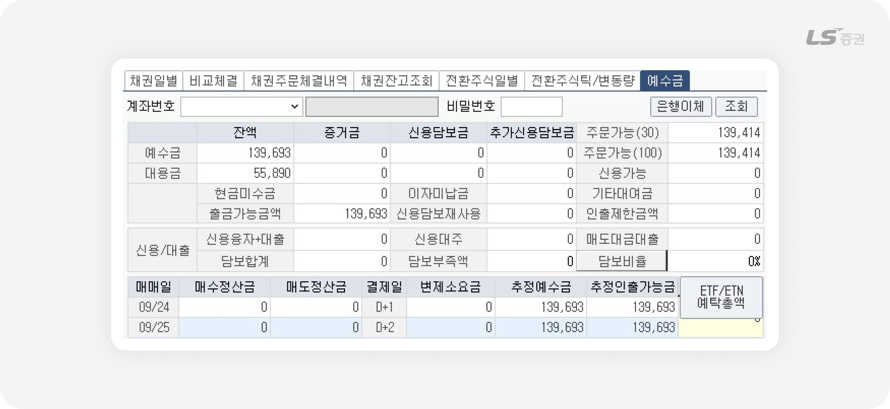
결정은 간편하게, 실행은 매끄럽게
05주문 실행 (D영역)
매수/매도 기능
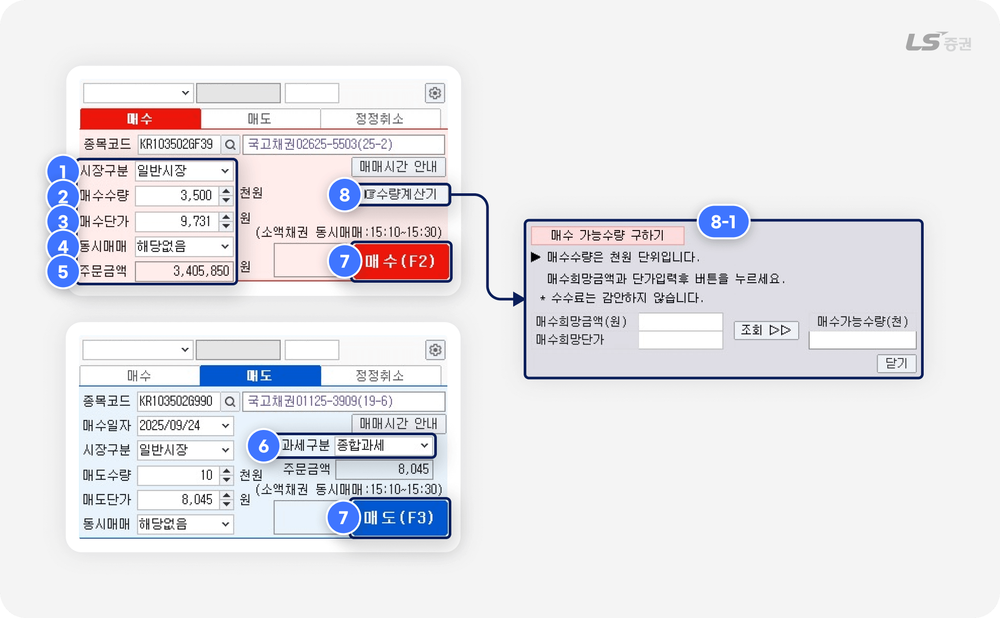
-
1
시장구분
- 거래 시장을 일반시장, 소액시장 중 선택할 수 있습니다.
- 일반시장은 기관 · 개인 투자자 모두 참여할 수 있으며, 주로 억 단위 거래가 이루어집니다.
- 소액시장은 소액 투자자가 참여하며, 주로 수백만 원 수준의 소액 채권 거래가 이루어집니다.
-
2
매수수량
- 천원 단위로 적용되는 주문수량을 입력합니다.
-
3
매수단가
- 매수단가를 입력합니다.
-
4
동시매매
- 소액채권의 경우 동시매매 여부를 선택할 수 있습니다.
-
5
주문금액 조회
-
매수수량 및 매수단가 입력으로 실제 주문하는 금액을 확인할 수 있습니다.
매수금액 = 매수수량(단위 천원) × 매수단가 ÷ 10
-
-
6
과세구분 선택
- 매도주문인 경우 과세구분을 종합과세, 분리과세 중 선택할 수 있습니다.
-
7
매수/매도 선택
- 버튼 클릭 시 매수(단축키 F2) 또는 매도(단축키 F3) 주문을 접수할 수 있습니다.
-
8
수량계산기
- 버튼 클릭 시 매수 가능수량을 계산할 수 있습니다. 수수료는 계산에 포함되지 않습니다.
-
9
주문 설정
- 버튼 클릭 시 초기 주문 설정, 기능 설정, 경고창 등 주문 환경을 설정할 수 있습니다.
정정/취소 기능
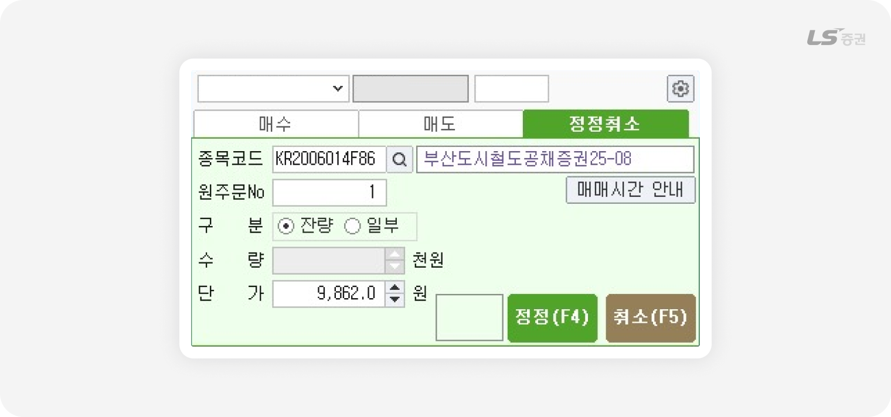
- 종목 정보를 직접 입력하거나 주문내역에서 선택 후, 주문을 정정(단축키 F4) 또는 취소(단축키 F5)할 수 있습니다.
참고해주세요!
채권 매매시간 및 매매단위 안내
- 호가접수시간 : 08:30 ~ 15:30
- 매매시간 : 09:00 ~ 15:30
-
소액채권 동시매매 :
15:10 ~ 15:30 (동시매매 시간에는 동시매매 항목(번)에서 '동시매매' 선택 필수)
- 매매수량단위 : 액면 1,000원
주문 설정 기능
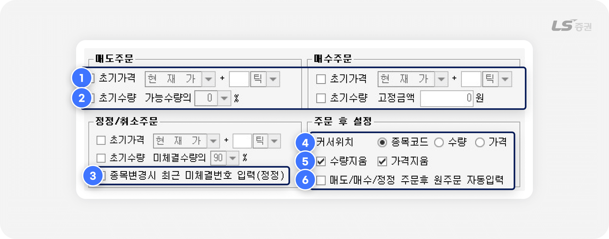
주문 전 자동 입력 설정
-
1
초기가격 : 체크 시 매도/매수/정정 주문 화면에서 주문단가에 초기 설정 가격이 자동 입력됩니다.
-
2
초기수량 : 체크 시 매도/매수/정정 주문 화면에서 주문수량에 초기 설정 수량이 자동 입력됩니다.
-
3
종목변경 시 최근 미체결번호 입력(정정) :
체크 시 정정/취소 주문 화면에서 직전 미체결 주문 번호를 자동 입력합니다.
주문 후 설정
-
4
커서위치 : 주문 후 커서가 이동할 곳을 지정합니다.
-
5
수량지움 / 가격지움 : 체크 시 주문 시 입력한 수량 또는 가격을 주문 실행 후 유지하지 않고 삭제합니다.
-
6
매도/매수/정정 주문후 원주문 자동입력 :
체크 시 정정/취소 주문 화면을 조회하면 최근 매도/매수/정정 주문 번호가 자동 입력됩니다.
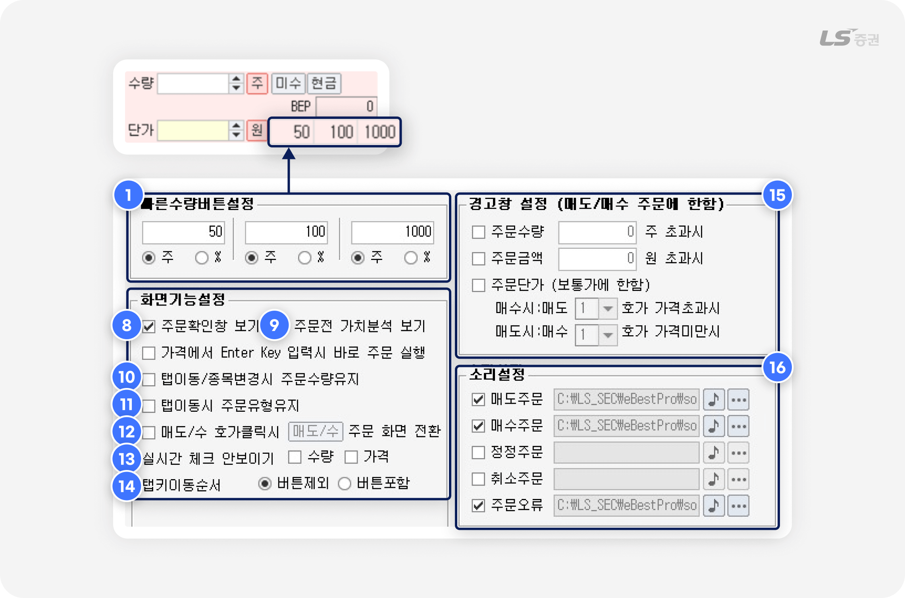
빠른 수량 버튼 설정
-
7
매도/매수 주문 화면에서 클릭 입력하는 주문수량 기준을 설정할 수 있습니다.
총 3개의 기준을 미리 설정할 수 있으며, 수량(주) 및 주문가능수량 대비 비율(%) 중 선택할 수 있습니다.
화면 기능 설정
-
8
주문확인창 보기 : 체크 시 착오주문 방지를 위해 주문 실행 전 확인창을 표시합니다.
-
9
주문전 가치분석 보기 :
체크 시 위험 종목을 선택한 경우 주문 화면이 노란색 배경으로 변경되고 경고 메시지를 표시합니다.
-
10
탭이동/종목변경시 주문수량유지 : 체크 후 종목을 변경하거나 탭 전환 시 입력한 주문수량을 유지합니다.
-
11
탭이동시 주문유형유지 : 체크 후 매도/매수 주문 화면 전환 시 선택한 거래소와 주문유형을 유지합니다.
-
12
매도/수 호가클릭시 주문 화면 전환 :
체크 시 클릭한 호가가 현재가보다 높으면 매도 주문 화면, 낮으면 매수 주문 화면으로 전환됩니다.
-
13
실시간 체크 안보이기 :
체크 후 초기가격(1번)과 초기수량(2번)에 체크하면 주문 화면에 표시되는 자동 체크박스를 숨깁니다.
-
14
탭키이동순서 : 체크 시 탭 키를 눌러 이동할 때 커서가 ‘주’ ‘가능’ 등 주요 버튼을 포함할지 여부를 선택합니다.
경고창 설정
-
15
매수/매도 주문 시 설정한 조건에 부합할 경우 주문 전 경고창을 표시해 주문 실수를 방지하도록 도와줍니다.
소리설정
-
16
주문 접수가 완료되거나 주문 오류 발생 시 소리로 알려주는 알림음을 설정할 수 있습니다.
지금까지 LS증권 투혼 HTS [7552] 장내채권주문종합 화면을 살펴보았습니다.
장내채권은 예금보다 높은 수익률을 기대하면서도 주식보다 변동성이 낮아, 안정적 자금 운용에 적합합니다.
때문에 여러 상품에 분산 투자하는 포트폴리오 전략을 구상할 때 수익과 리스크를 적절히 배분하기 위한 방법으로 채권을 고려해볼만 합니다.
감사합니다!